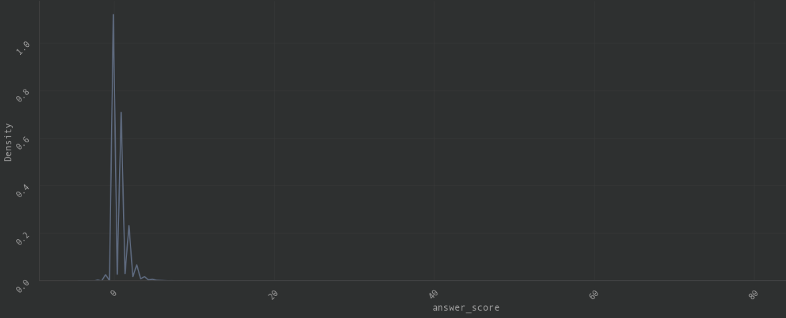

Users
Information
Dataset: bigquery-public-data.stackoverflow.usersQueries:
- queries/stackoverflow/eda/users/relevant_users.sql → Retrieve all the users that have not null values in their information from the ones who recently performed their last access into the platform
General
- Shape → (33517, 12)
- No IDs columns → All are potential features
Null Values
- 6 columns have null values
- Column age has only null values → Discard
- Columns about_me and website_url have more than 50% null values → Discard
Numerical Features Distribution
- Numerical features have a very high Standard Deviation and different scales → Require Standardisation
- Identify outliers through the z-score computation → Few outliers, drop them
Categorical Features Distribution
- Location features has too many values and of poor quality. There is both USA and United States, or both India and Bangalore, Karnataka, India → Try with encoding. Similar values should have similar encodings.
Datetime Features Distribution
- There is huge interval of creation_date →Use only the year has a feature
Badges
Information
Dataset: bigquery-public-data.stackoverflow.badgesQueries:
- queries/stackoverflow/eda/badges/badges_relevant_users.sql - Retrieve badge information of the relevant users
- queries/stackoverflow/eda/badges/number_badges_relevant_users.sql - Retrieve the number of badges obtained by each user in relevant users
General
- Shape → (44865, 17)
Null Values
- Same as users table
Categorical Features Distribution
- The badge_name feature is well curated → Use it through an encoding/embedding
- The most rare badge has indeed quite above the average values for any raw_numerical_features → Engineer a feature called has_most_rare_badges by including the top rarest badges
- The feature badge_count has a strong correlation with user_reputation, user_up_votes and user_views → Engineer a feature called badge_count
Post Answers
Information
Dataset: bigquery-public-data.stackoverflow.posts_answersQueries:
- queries/stackoverflow/eda/posts_answers/post_answers_relevant_users.sql → Retrieve post answers of the relevant users in the last time frame from the latest post answer's creation date
General
- Shape → (55881, 18)
Null Values
- The columns answer_title, answer_count, answer_favourite_count, answer_view_count and answer_tag are all null → Drop them
Numerical Features
- The answer_score is extremely skewed → There might the need to define the label with also other information a part from the score
- 
Conclusions
- Drop the age column from Users
- Drop answer_title, answer_count, answer_favourite_count, answer_view_count and answer_tag from Post Answers
- Drop outliers with the z-score and apply standardisation to the columns: user_reputation, user_up_votes, user_down_votes and user_views
- Encode the feature user_name in user_name_encoded
- Encode the feature location in user_location_encoded
- Encode the feature user_about_me in user_about_me_encoded
- Engineer a features called user_creation_year by extracting the year from the creation_date
- Engineer a feature called has_most_rare_badges by including the top rarest badges
- Engineer a feature called badge_count as the total number of badges per user in the last years
- Engineer a feature called user_has_profile_image_url from the user_profile_image_url using a boolean to denote when the field is non-null
- Engineer a feature called user_has_website_url from the user_website_url using a boolean to denote when the field is non-null
- Engineer a feature called answer_body_encoded by encoding the field answer_body
- Add the feature answer_comment_count
- Engineer a feature called answer_creation_year from answer_creation_date
- Engineer a feature called answer_creation_month from answer_creation_date
- Engineer a feature called badges_encoded from badges_list